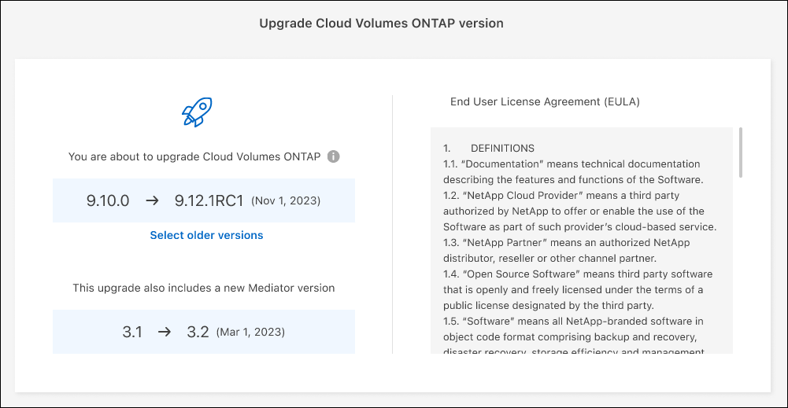

Notes de mise à jour
Notes de mise à jour
Mettez à niveau le logiciel Cloud Volumes ONTAP
 Suggérer des modifications
Suggérer des modifications
Mettez à niveau Cloud Volumes ONTAP depuis BlueXP pour accéder aux dernières nouvelles fonctionnalités et améliorations. Préparez les systèmes Cloud Volumes ONTAP avant de mettre à niveau le logiciel.
Présentation de la mise à niveau
Avant de démarrer le processus de mise à niveau Cloud Volumes ONTAP, vous devez avoir connaissance des points suivants.
Mise à niveau depuis BlueXP uniquement
Les mises à niveau de Cloud Volumes ONTAP doivent être effectuées depuis BlueXP. Vous ne devez pas mettre à niveau Cloud Volumes ONTAP à l'aide de System Manager ou de l'interface de ligne de commandes. Cela peut affecter la stabilité du système.
Comment mettre à niveau
BlueXP offre deux façons de mettre à niveau Cloud Volumes ONTAP :
-
En suivant les notifications de mise à niveau qui apparaissent dans l'environnement de travail
-
En plaçant l'image de mise à niveau dans un emplacement HTTPS, puis en fournissant BlueXP avec l'URL
Chemins de mise à niveau pris en charge
La version de Cloud Volumes ONTAP sur laquelle vous pouvez effectuer la mise à niveau dépend de la version de Cloud Volumes ONTAP que vous utilisez actuellement.
| Version actuelle | Versions pouvant être directement mises à niveau vers |
|---|---|
9.13.0 |
9.13.1 |
9.12.1 |
9.13.1 |
9.13.0 |
|
9.12.0 |
9.12.1 |
9.11.1 |
9.12.1 |
9.12.0 |
|
9.11.0 |
9.11.1 |
9.10.1 |
9.11.1 |
9.11.0 |
|
9.10.0 |
9.10.1 |
9.9.1 |
9.10.1 |
9.10.0 |
|
9.9.0 |
9.9.1 |
9.8 |
9.9.1 |
9.7 |
9.8 |
9.6 |
9.7 |
9.5 |
9.6 |
9.4 |
9.5 |
9.3 |
9.4 |
9.2 |
9.3 |
9.1 |
9.2 |
9.0 |
9.1 |
8.3 |
9.0 |
Notez ce qui suit :
-
Les chemins de mise à niveau pris en charge pour Cloud Volumes ONTAP sont différents de ceux d'un cluster ONTAP sur site.
-
Si vous effectuez une mise à niveau en suivant les notifications de mise à niveau qui apparaissent dans un environnement de travail, BlueXP vous invite à effectuer une mise à niveau vers une version qui suit ces chemins de mise à niveau pris en charge.
-
Si vous mettez une image de mise à niveau sur un emplacement HTTPS, veillez à suivre les chemins de mise à niveau pris en charge.
-
Dans certains cas, vous devrez peut-être procéder à une mise à niveau plusieurs fois pour atteindre la version cible.
Par exemple, si vous utilisez la version 9.8 et que vous voulez passer à la version 9.10.1, vous devez d'abord passer à la version 9.9.1 puis à la version 9.10.1.
-
Pour les versions de correctif (P), vous pouvez mettre à niveau d'une version vers n'importe quelle version P de la prochaine version.
Voici quelques exemples :
-
9.13.0 > 9.13,1 P15
-
9.12.1 > 9,13,1 P2
-
Rétablissement ou rétrogradation
La restauration ou la rétrogradation d'une version antérieure de Cloud Volumes ONTAP n'est pas prise en charge.
Inscription au support
Cloud Volumes ONTAP doit être enregistré auprès du service de support de NetApp pour mettre à niveau le logiciel à l'aide de l'une des méthodes décrites sur cette page. Cela s'applique à la fois à PAYGO et à BYOL. Vous devez le faire "Enregistrer manuellement les systèmes PAYGO", Tandis que les systèmes BYOL sont enregistrés par défaut.

|
Un système qui n'est pas enregistré pour le support recevra toujours les notifications de mise à jour de logiciel qui apparaissent dans BlueXP lorsqu'une nouvelle version est disponible. Mais vous devrez enregistrer le système avant de pouvoir mettre à niveau le logiciel. |
Mises à niveau du médiateur HA
BlueXP met également à jour l'instance de médiateur si nécessaire lors du processus de mise à niveau de Cloud Volumes ONTAP.
Préparation à la mise à niveau
Avant d'effectuer une mise à niveau, vous devez vérifier que vos systèmes sont prêts et apporter les modifications nécessaires à la configuration.
Planifiez les temps d'indisponibilité
Lorsque vous mettez à niveau un système à un seul nœud, le processus de mise à niveau met le système hors ligne pendant 25 minutes au cours desquelles les E/S sont interrompues.
Dans la plupart des cas, la mise à niveau d'une paire haute disponibilité s'effectue sans interruption des E/S. Au cours de ce processus de mise à niveau sans interruption, chaque nœud est mis à niveau en tandem afin de continuer à traiter les E/S aux clients.
Les protocoles orientés session peuvent avoir des effets négatifs sur les clients et les applications dans certains domaines pendant les mises à niveau. Pour plus d'informations, "Reportez-vous à la documentation ONTAP"
Vérifier que le rétablissement automatique est toujours activé
Le rétablissement automatique doit être activé sur une paire Cloud Volumes ONTAP HA (paramètre par défaut). Si ce n'est pas le cas, l'opération échouera.
Suspendre les transferts SnapMirror
Si un système Cloud Volumes ONTAP a des relations SnapMirror actives, il est préférable de suspendre les transferts avant de mettre à jour le logiciel Cloud Volumes ONTAP. La suspension des transferts empêche les défaillances de SnapMirror. Vous devez suspendre les transferts depuis le système de destination.

|
Même si la sauvegarde et la restauration BlueXP utilisent une implémentation de SnapMirror pour créer des fichiers de sauvegarde (appelé SnapMirror Cloud), il n'est pas nécessaire de suspendre les sauvegardes lors de la mise à niveau d'un système. |
Ces étapes décrivent l'utilisation de System Manager pour la version 9.3 et ultérieure.
-
Connectez-vous à System Manager à partir du système de destination.
Vous pouvez vous connecter à System Manager en pointant votre navigateur Web sur l'adresse IP de la LIF de gestion du cluster. L'adresse IP est disponible dans l'environnement de travail Cloud Volumes ONTAP.
L'ordinateur à partir duquel vous accédez à BlueXP doit disposer d'une connexion réseau à Cloud Volumes ONTAP. Par exemple, vous devrez peut-être vous connecter à BlueXP à partir d'un hôte de saut situé dans le réseau de votre fournisseur de cloud. -
Cliquez sur protection > relations.
-
Sélectionnez la relation et cliquez sur opérations > Quiesce.
Vérifiez que les agrégats sont en ligne
Les agrégats pour Cloud Volumes ONTAP doivent être en ligne avant de mettre à jour le logiciel. Les agrégats doivent être en ligne dans la plupart des configurations, mais si ce n'est pas le cas, vous devez les mettre en ligne.
Ces étapes décrivent l'utilisation de System Manager pour la version 9.3 et ultérieure.
-
Dans l'environnement de travail, cliquez sur l'onglet Aggregates.
-
Sous le titre de l'agrégat, cliquez sur le bouton ellipse, puis sélectionnez Afficher les détails de l'agrégat.

-
Si l'agrégat est hors ligne, utilisez System Manager pour mettre l'agrégat en ligne :
-
Cliquez sur stockage > agrégats et disques > agrégats.
-
Sélectionnez l'agrégat, puis cliquez sur plus d'actions > État > en ligne.
-
Mettez à niveau Cloud Volumes ONTAP
BlueXP vous avertit lorsqu'une nouvelle version est disponible pour la mise à niveau. Vous pouvez démarrer le processus de mise à niveau à partir de cette notification. Pour plus de détails, voir Mise à niveau depuis les notifications BlueXP.
Une autre façon d'effectuer des mises à niveau logicielles à l'aide d'une image sur une URL externe. Cette option est utile si BlueXP ne peut pas accéder au compartiment S3 pour mettre à niveau le logiciel ou si vous avez reçu un correctif. Pour plus de détails, voir Mise à niveau à partir d'une image disponible sur une URL.
Mise à niveau depuis les notifications BlueXP
BlueXP affiche une notification dans les environnements de travail Cloud Volumes ONTAP lorsqu'une nouvelle version de Cloud Volumes ONTAP est disponible :

Vous pouvez lancer le processus de mise à niveau à partir de cette notification, qui automatise le processus en obtenant l'image logicielle à partir d'un compartiment S3, en installant l'image, puis en redémarrant le système.
Les opérations BlueXP, telles que la création de volume ou d'agrégat, ne doivent pas être en cours sur le système Cloud Volumes ONTAP.
-
Dans le menu de navigation de gauche, sélectionnez stockage > Canvas.
-
Sélectionnez un environnement de travail.
Une notification apparaît dans l'onglet vue d'ensemble si une nouvelle version est disponible :
-
Si une nouvelle version est disponible, cliquez sur mettre à niveau maintenant!
Avant de pouvoir mettre à niveau Cloud Volumes ONTAP via la notification BlueXP, vous devez disposer d'un compte sur le site de support NetApp. -
Sur la page Cloud Volumes ONTAP de mise à niveau, lisez le CLUF, puis sélectionnez J'ai lu et approuvé le CLUF.
-
Cliquez sur Upgrade.
La page Cloud Volumes ONTAP de mise à niveau sélectionne par défaut la dernière version Cloud Volumes ONTAP disponible pour la mise à niveau. Si disponible, vous pouvez sélectionner des versions plus anciennes de Cloud Volumes ONTAP pour votre mise à niveau en cliquant sur Sélectionner les versions plus anciennes.
Reportez-vous à la "Liste des chemins de mise à niveau pris en charge" Pour connaître le chemin de mise à niveau approprié en fonction de votre version Cloud Volumes ONTAP actuelle.
-
Pour vérifier l'état de la mise à niveau, cliquez sur l'icône Paramètres et sélectionnez Timeline.
BlueXP démarre la mise à niveau du logiciel. Vous pouvez effectuer des actions sur l'environnement de travail lorsque la mise à jour du logiciel est terminée.
Si vous avez suspendu les transferts SnapMirror, utilisez System Manager pour reprendre les transferts.
Mise à niveau à partir d'une image disponible sur une URL
Vous pouvez placer l'image du logiciel Cloud Volumes ONTAP sur le connecteur ou sur un serveur HTTP, puis lancer la mise à niveau du logiciel depuis BlueXP. Vous pouvez utiliser cette option si BlueXP ne peut pas accéder au compartiment S3 pour mettre à niveau le logiciel.
-
Les opérations BlueXP, telles que la création de volume ou d'agrégat, ne doivent pas être en cours sur le système Cloud Volumes ONTAP.
-
Si vous utilisez HTTPS pour héberger des images ONTAP, la mise à niveau peut échouer en raison de problèmes d'authentification SSL, qui sont causés par des certificats manquants. La solution consiste à générer et à installer un certificat signé CA à utiliser pour l'authentification entre ONTAP et BlueXP.
Accédez à la base de connaissances NetApp pour obtenir des instructions détaillées :
-
Facultatif : configurez un serveur HTTP pouvant héberger l'image logicielle Cloud Volumes ONTAP.
Si vous disposez d'une connexion VPN au réseau virtuel, vous pouvez placer l'image logicielle Cloud Volumes ONTAP sur un serveur HTTP de votre propre réseau. Sinon, vous devez placer le fichier sur un serveur HTTP dans le cloud.
-
Si vous utilisez votre propre groupe de sécurité pour Cloud Volumes ONTAP, assurez-vous que les règles sortantes autorisent les connexions HTTP afin que Cloud Volumes ONTAP puisse accéder à l'image logicielle.
Le groupe de sécurité Cloud Volumes ONTAP prédéfini permet par défaut les connexions HTTP sortantes. -
Obtenez l'image logicielle de "Le site de support NetApp".
-
Copiez l'image du logiciel dans un répertoire du connecteur ou sur un serveur HTTP à partir duquel le fichier sera servi.
Deux chemins sont disponibles. Le chemin correct dépend de la version de votre connecteur.
-
/opt/application/netapp/cloudmanager/docker_occm/data/ontap/images/ -
/opt/application/netapp/cloudmanager/ontap/images/
-
-
Dans l'environnement de travail BlueXP, cliquez sur le bouton … (Ellipse), puis cliquez sur mettre à jour Cloud Volumes ONTAP.
-
Sur la page mettre à jour la version de Cloud Volumes ONTAP, entrez l'URL, puis cliquez sur changer l'image.
Si vous avez copié l'image logicielle sur le connecteur dans le chemin indiqué ci-dessus, entrez l'URL suivante :
\Http://<Connector-private-IP-address>/ontap/images/<image-file-name>
Dans l'URL, image-file-name doit suivre le format "COT.image.9.13.1P2.tgz". -
Cliquez sur Continuer pour confirmer.
BlueXP démarre la mise à jour logicielle. Vous pouvez effectuer des actions sur l'environnement de travail une fois la mise à jour logicielle terminée.
Si vous avez suspendu les transferts SnapMirror, utilisez System Manager pour reprendre les transferts.